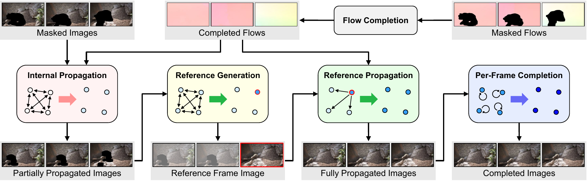
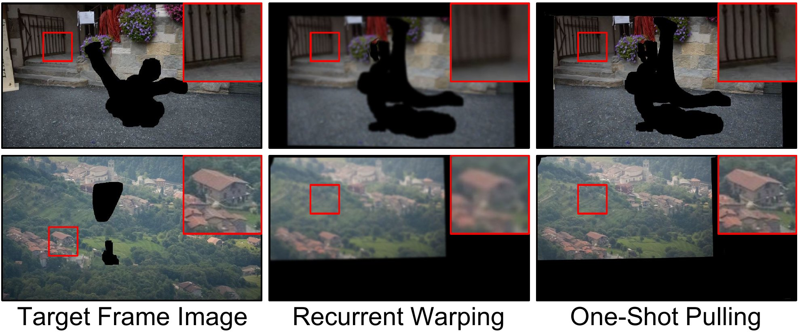
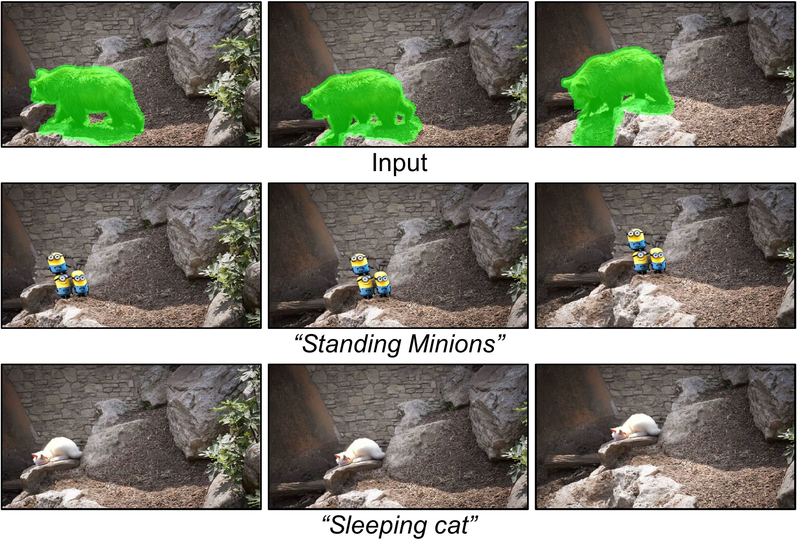
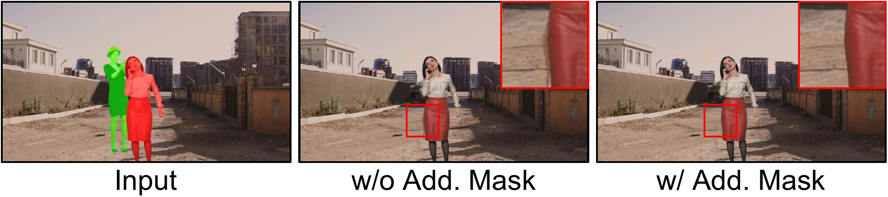

1Yonsei University2Adobe Research
*Work done during an internship at Adobe Research
AAAI 2025
TL;DRRGVI propagates known pixels across a video with one-shot pixel pulling and generates the rest in a single key frame with a large generative model, then spreads that reference to every frame.
Video object removal on DAVIS 2016. Each clip shows the input with its mask, FuseFormer, ProPainter, and RGVI.
Video inpainting (VI) is a challenging task that requires effective propagation of observable content across frames while simultaneously generating new content not present in the original video. In this study, we propose a robust and practical VI framework that leverages a large generative model for reference generation in combination with an advanced pixel propagation algorithm. Powered by a strong generative model, our method not only significantly enhances frame-level quality for object removal but also synthesizes new content in the missing areas based on user-provided text prompts. For pixel propagation, we introduce a one-shot pixel pulling method that effectively avoids error accumulation from repeated sampling while maintaining sub-pixel precision. To evaluate various VI methods in realistic scenarios, we also propose a high-quality VI benchmark, HQVI, comprising carefully generated videos using alpha matte composition. On public benchmarks and the HQVI dataset, our method demonstrates significantly higher visual quality and metric scores compared to existing solutions. Furthermore, it can process high-resolution videos exceeding 2K resolution with ease, underscoring its superiority for real-world applications.
Method
Coupled approaches train one network to both propagate and generate, which leaves an ambiguity between the two. RGVI decouples them. Content that is visible somewhere in the video is propagated with optical flow, and content that appears nowhere in the video comes from a large generative model.

Known pixels are propagated across all frames with completed optical flows. Colors are pulled from the source frames in both directions, and pixels on which the two directions disagree are marked as unreliable.
A key frame is chosen by how many unknown pixels it connects to in other frames. Stable Diffusion fills its missing area, either as plausible background or as new content from a text prompt.
The generated pixels in the key frame are propagated to the rest of the frames with the pre-computed flows.
A lightweight encoder-decoder network fills the areas that are still missing, including the pixels marked as unreliable.
Recurrent pixel warping re-samples colors at every step, so details fade over long propagation. RGVI warps the optical flows instead and pulls each color from its source frame only once, which keeps sub-pixel accuracy without re-sampling artifacts.

| Internal propagation | Reference propagation | PSNR ↑ | SSIM ↑ | LPIPS ↓ | VFID ↓ |
|---|---|---|---|---|---|
| None | None | 27.64 | 0.9234 | 0.0962 | 0.5916 |
| Recurrent warping | None | 31.43 | 0.9512 | 0.0595 | 0.2405 |
| One-shot pulling | None | 31.60 | 0.9559 | 0.0390 | 0.1868 |
| Recurrent warping | Recurrent warping | 30.17 | 0.9478 | 0.0558 | 0.2153 |
| One-shot pulling | One-shot pulling | 30.66 | 0.9527 | 0.0335 | 0.1825 |
Pixel propagation strategies on HQVI at 240p.
In the default removal mode, the text prompt is “Empty background, high resolution”, so the model fills the missing area with content that blends into the scene. In the generation mode, a user prompt decides what appears in the missing area.

Benchmark
HQVI blends foreground objects from VideoMatte240K into real-world videos from Pexels with alpha mattes, so every video comes with a ground truth for object removal. It includes scenarios that need generation for large missing areas, and targets occluded by distracting objects, annotated with a negative mask for the object to remove and a positive mask for the object to keep. Each video is 1200×2160.
Skydivers over a city
Workers in front of a graffiti wall
Example videos from the HQVI dataset at 480p. Negative masks, the objects to remove, are highlighted in green, while positive masks, the occluding objects to keep, are highlighted in red.
Results
| Method | Publication | PSNR ↑ | SSIM ↑ | LPIPS ↓ | VFID ↓ | Mem. | Time |
|---|---|---|---|---|---|---|---|
| 240×432 input | |||||||
| STTN† | ECCV'20 | 29.64 | 0.9339 | 0.0528 | 0.2594 | 5.2G | 9s |
| FGVC | ECCV'20 | 28.37 | 0.9383 | 0.0409 | 0.2436 | 1.3G | 2m 56s |
| FuseFormer† | ICCV'21 | 29.92 | 0.9365 | 0.0498 | 0.2727 | 21.5G | 17s |
| E2FGVI† | CVPR'22 | 30.63 | 0.9427 | 0.0401 | 0.1885 | 7.2G | 12s |
| ProPainter | ICCV'23 | 30.62 | 0.9413 | 0.0388 | 0.2128 | 8.1G | 15s |
| RGVI w/o Ref. | 31.60 | 0.9559 | 0.0390 | 0.1868 | 8.3G | 55s | |
| RGVI | 30.66 | 0.9527 | 0.0335 | 0.1825 | 8.3G | 58s | |
| 480×864 input | |||||||
| FGVC | ECCV'20 | 28.63 | 0.9433 | 0.0388 | 0.0470 | 2.4G | 15m 7s |
| ProPainter | ICCV'23 | 30.69 | 0.9414 | 0.0457 | 0.0478 | 23.7G | 1m 12s |
| RGVI w/o Ref. | 31.19 | 0.9534 | 0.0403 | 0.0404 | 8.3G | 1m 38s | |
| RGVI | 30.90 | 0.9513 | 0.0342 | 0.0311 | 8.3G | 1m 41s | |
| 1200×2160 input | |||||||
| RGVI w/o Ref. | 29.81 | 0.9501 | 0.0403 | 0.0101 | 17.2G | 7m 56s | |
| RGVI | 30.10 | 0.9489 | 0.0357 | 0.0058 | 17.2G | 7m 59s | |
†Requires a fixed input resolution. Mem. is the maximum GPU memory during inference, and Time is the average inference time per sequence, on a single TITAN RTX GPU.
DAVI and YTVI corrupt the DAVIS 2016 and YouTube-VOS 2018 videos with random free-form masks, and the original videos serve as ground truth. Reference generation is skipped here, since restoration rarely needs it.
| DAVI | YTVI | |||
|---|---|---|---|---|
| Method | PSNR ↑ | SSIM ↑ | PSNR ↑ | SSIM ↑ |
| STTN | 26.98 | 0.8476 | 29.96 | 0.9102 |
| FuseFormer | 27.41 | 0.8583 | 29.18 | 0.9001 |
| E2FGVI | 28.71 | 0.8885 | 31.18 | 0.9280 |
| ProPainter | 29.55 | 0.9058 | 31.70 | 0.9312 |
| RGVI w/o Ref. | 29.75 | 0.9186 | 31.70 | 0.9335 |
240p input resolution.
Analysis
Flow-based methods break down when the target is occluded by another object, because its motion corrupts the completed flows. Besides the mask of the object to remove, RGVI can take the mask of the occluding object to keep. The two are removed together, and the kept object is pasted back afterwards, which prevents color bleeding.

| Additional mask | PSNR ↑ | SSIM ↑ | LPIPS ↓ | VFID ↓ |
|---|---|---|---|---|
| Without | 35.13 | 0.9813 | 0.0137 | 0.0779 |
| With | 37.31 | 0.9848 | 0.0102 | 0.0504 |
HQVI videos that contain occluding objects, at 240p.
Like other flow-based methods, RGVI relies on optical flows, so inaccurate flow completion can cause visible structural misalignment. The generated reference content may also look unnatural at times. Additional positive masks and stronger generative models are possible remedies.
@inproceedings{cho2025elevating,
title = {Elevating Flow-Guided Video Inpainting with Reference Generation},
author = {Cho, Suhwan and Oh, Seoung Wug and Lee, Sangyoun and Lee, Joon-Young},
booktitle = {Proceedings of the AAAI Conference on Artificial Intelligence},
volume = {39},
number = {3},
pages = {2527--2535},
year = {2025},
doi = {10.1609/aaai.v39i3.32255}
}